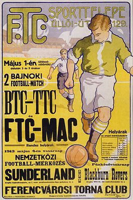

1899. május 3-án alakult, első elnöke dr. Springer Ferenc volt.A klub színe: zöld-fehér. Az egyesület címerében az öt zöld és négy fehér csík Budapest IX. kerületét, a Ferencvárost szimbolizálja. Az egyesületi emblémán lévő, zöld pajzsban elhelyezett egymáshoz fordított három E betű az egyesület jelmondatára utal: Erkölcs, Erő, Egyetértés. A labdarúgó szakosztálynak külön címere van.
1900. december 3-án alapították az egyesület „Football”-szakosztályát. Két hónappal később, február 10-én megrendezték az első magyar bajnoki mérkőzést, ami a Ferencváros és a Budapesti TC között zajlott, ezt azonban a Magyar Labdarúgó-szövetség nem ismerte el hivatalos mérkőzésként. Az első hivatalos bajnoki mérkőzését így 1900. április 21-én játszotta a Ferencváros, ekkor a MUE ellen 5–3-as vereséget szenvedtek
A Ferencváros legelső otthona nem az Üllői úton, hanem a Soroksári úton volt. Ez a létesítmény mindössze 1500 fő befogadására volt alkalmas és kisméretű játéktere sem felelt meg az igényeknek. Az első stadiont az Üllői úton, az 1910 őszén megindult építkezést követően 1911. február 12-én adták át, melynek befogadóképessége: 40000 fő volt. 1971-ben lebontották a régi lelátókat és megkezdődött egy új labdarúgó-stadion építése. 2007. december 21. óta a Ferencváros legendás játékosának a Albert Flóriánnak a nevét viseli a stadion. Hosszas előkészítés és tárgyalássorozat után 2012-ben Kubatov Gábor, a Ferencvárosi Torna Club elnöke bejelentette a sokak által várt Groupama Aréna megépítését.
 Forrás: Wikipédia
Forrás: Wikipédia